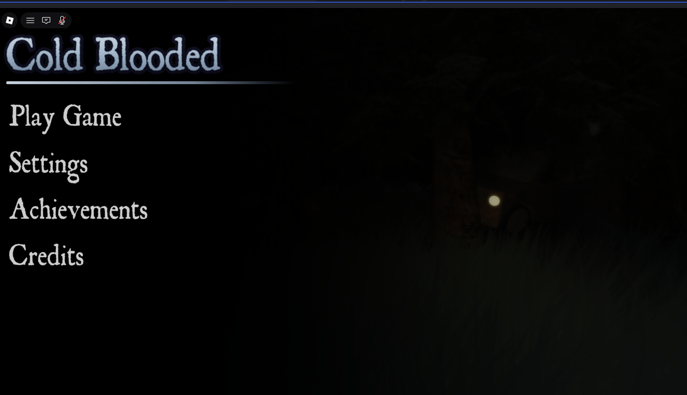
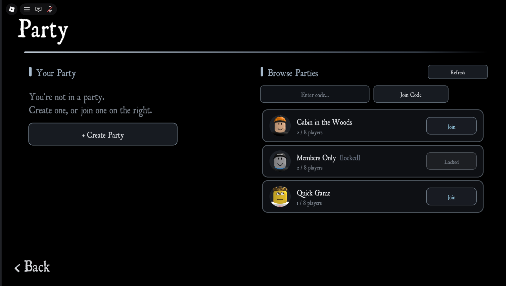
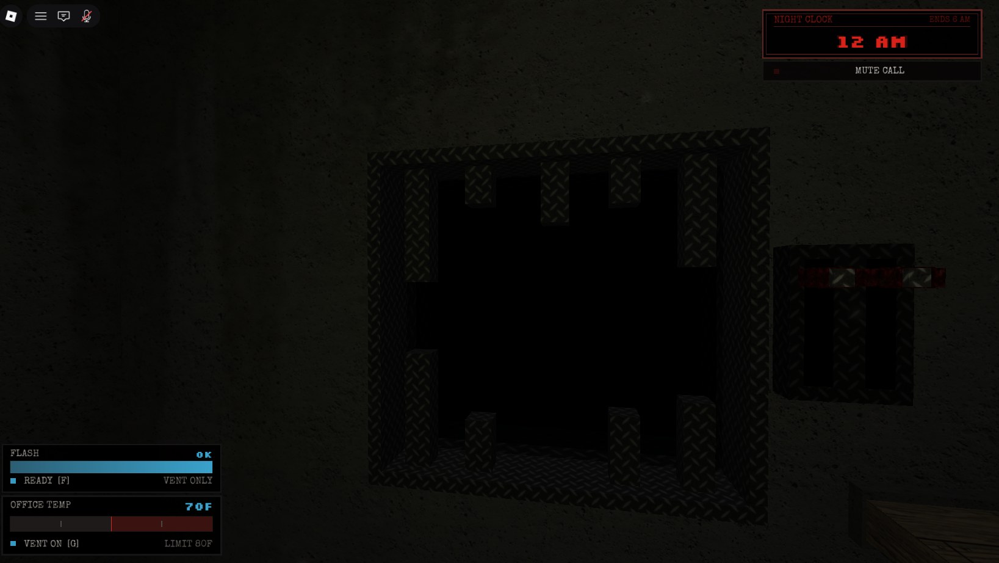
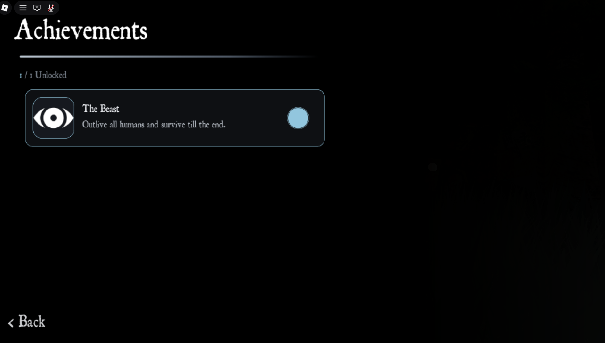

Chapter Three
GUI
Menus, HUDs and social screens from Cold Blooded, designed and built by me in Vide.
Everything here is built in Vide, so each panel is a reactive component driven by state rather than a tree of instances poked by hand. A source updates, the screen follows, and nothing has to remember to refresh itself.
Cold Blooded is a horror project, which set the hard constraint. The GUI had to stay readable in near darkness without lighting the screen up and killing the mood. So everything sits on a black ground, the type carries the tone, and colour appears only where a number has to be read at a glance. Every screen below is live in game and wired to the systems behind it.




Reactive, not wired by hand
Three rules keep a screen this dark from becoming unreadable or unmaintainable.
State drives the tree
Every panel reads from a source. The party list, the flashlight charge and the unlock count all render from state, so a change on the server arrives on screen without a single manual update call.
Colour is information
Almost everything is white or bone on black. When something turns blue or red it is because a number crossed a threshold, so the eye goes straight to the thing that changed.
Scales to the screen
Layouts are built in scale rather than fixed pixels, so the same components hold their proportions from a phone up to a wide monitor without a separate mobile build.